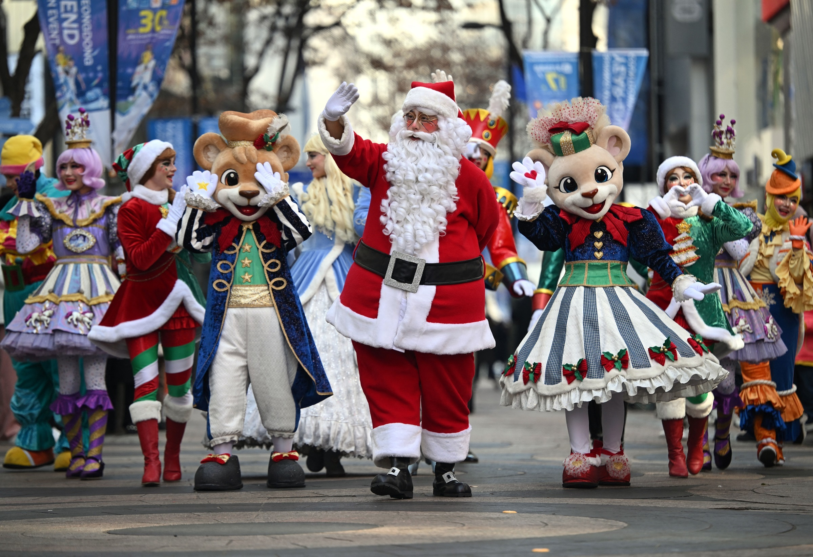

Xin chào các bạn K22411C
Các bạn có khỏe không?
coding vui vẻ nhé
Không khí Giáng sinh ngập tràn đường phố trên khắp thế giới với những màn trang trí rực rỡ sắc màu, dù xung đột vẫn diễn ra ở một số nơi. 10 Những người biểu diễn mặc đồ Ông già Noel và trang phục theo chủ đề Giáng sinh tham gia sự kiện quảng bá đường phố cho một công viên giải trí tại khu mua sắm ở Seoul, Hàn Quốc ngày 23/12. Thủ đô của Hàn Quốc đã trải qua nhiều ngày biểu tình sau khi Tổng thống Yoon Suk-yeol ban bố thiết quân luật hôm 3/12. Quốc hội Hàn Quốc ngày 14/12 bỏ phiếu luận tội ông Yoon, khiến ông bị đình chỉ mọi quyền hạn Tổng thống trong thời gian Tòa án Hiến pháp xem xét phán quyết. Người dân chụp ảnh selfie khi di chuyển bằng thang cuốn giữa khung cảnh trang trí Giáng sinh ở Bangkok, Thái Lan. Hai cô gái chụp ảnh khung cảnh trang trí Giáng sinh tại một nhà hàng ở thủ đô Damascus, Syria ngày 23/12. 2024 là năm biến động lớn đối với quốc gia này, sau khi liên minh đối lập lật đổ chính phủ của tổng thống Bashar al-Assad. Ahmed al-Shara, thủ lĩnh nhóm Hayat Tahrir-al-Sham (HTS) dẫn đầu phe đối lập, tuyên bố sẽ xây dựng một chính quyền mới "đoàn kết dân tộc" và tái thiết đất nước sau nhiều năm nội chiến. Cây Giáng sinh được thắp đèn trước mùa lễ tại Warsaw, Ba Lan đầu tháng này. Chợ Giáng sinh Warsaw, được tổ chức thường niên ở trung tâm thành phố, thu hút du khách bằng những gian hàng trang trí đèn màu rực rỡ, bày bán nhiều món đồ thủ công. Người dân đội mũ Ông già Noel tắm biển theo truyền thống dịp Giáng sinh ở thành phố Nice, Pháp ngày 22/12. Những cô gái trẻ chụp ảnh với cây Giáng sinh trước tòa nhà từng là trụ sở chính quyền thành phố Kharkov, đông bắc Ukraine. Tòa nhà này đã bị hư hại do pháo kích của Nga. Đây là Giáng sinh thứ ba kể từ khi chiến sự tại Ukraine bùng phát. Giao tranh vẫn diễn ra khốc liệt ở tiền tuyến và chưa có dấu hiệu hạ nhiệt.
Trường Đại học Kinh tế - Luật
Đang học màu mè
Màu đỏ theo tên